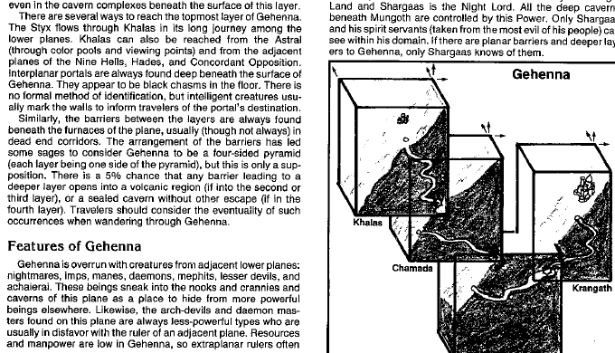

格赫纳 · Gehenna
格赫纳由四个燃烧的山地层组成：卡拉斯（Khalas）、查马达（Chamada）、芒戈斯（Mungoth）和克兰加斯（Krangath）。每层都是巨大的火山山体，坡度可达四十五度，熔岩、蒸汽和热风从地下喷出。地面会滑动，旅行者可能沿山坡滚落数英里。

卡拉斯最接近星界，气候较温和；查马达拥有猛烈火山与沸腾峡谷；芒戈斯寒冷而多雾，火山热量从地下传来；克兰加斯是死寂的岩石荒原。格赫纳的门户常出现在山谷、火山口和悬崖内部，通往哈迪斯、九层地狱、阿刻戎或深渊。
格赫纳栖息着来自相邻下层的夜魔、恶魔、魔鬼、梅菲特和其他掠夺者。火山资源吸引矿工与放逐者，但位面本身会惩罚粗心的旅行者：裸露皮肤被热风灼伤，护甲会发烫，火山灰会阻塞呼吸。